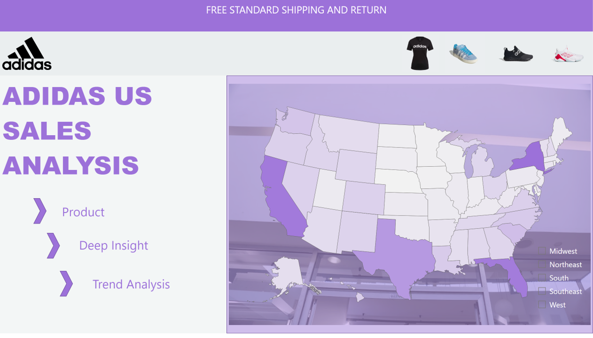

March 14, 2025
I joined the Power BI DataViz World Championship! Themed Travel, and I put together insights on travel trends.
This report analyzes travel trends by highlighting popular destinations, spending patterns, trip durations, and traveler demographics, including nationality and age-based expenses.
.
February 21, 2025
I analysed urbanization and economic trends across 12 South American countries (2013-2023) to explore how factors like employment and GDP shape urban areas.
More than half of the world's population now lives in cities, and in South America, urbanization is accelerating rapidly. Brazil and Chile, two of the most urbanized nations in the region, show interesting contrasts.
.
January 24, 2025
This interactive report leverages parameters, bookmarks, info buttons, and information overlays to uncover valuable insights and provide seamless navigation. I analyse sales trend over time, product performance across various locations, customer distribution and buying behaviour, and compare domestic vs. international product performance and overall sales.
With this report, business owners and stakeholders can make informed decisions on product offerings, inventory management, and market expansion, ultimately driving business growth and profitability.
.
November 09, 2024
In this project, I worked on analysing Adidas's US sales data for 2020 and 2021, focusing on the performance of products, sales methods, and regional distribution.
Using Power BI, I created an interactive reports that offers insights into key trends, growth opportunities, and areas where business strategies can be optimized.
.

This project aims to optimize digital advertising spend for Fresh Cart, an online grocery store, by leveraging business intelligence tools like Power BI.

This project demonstrates my skills in designing and developing comprehensive analytics reports and dashboards using Microsoft Excel. it focuses on HR data analysis, offering insights into workforce demographics, turnover, satisfaction, and salary trends through advanced Excel features, including Power Pivot and DAX measures.

In this project, I demonstrated how to implement a Medallion Lakehouse architecture in Microsoft Fabric. The Medallion architecture consists of three layers: the Bronze Layer (Raw Data Layer), Silver Layer (validated data), and Gold Layer (enriched data). Each layer serves a specific purpose and is designed to support efficient data governance and performance.
In this project, I developed an in-depth dashboard analyzing sales data from a SuperStore up to 2017. I utilized advanced Excel features like pivot tables and DAX measures to uncover actionable insights into sales performance.